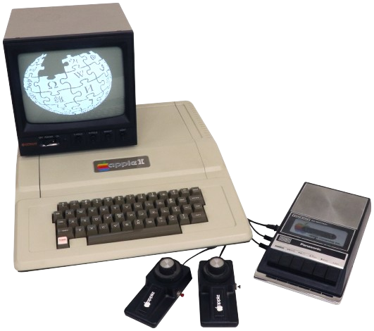

|  |
O Apple II , lançado em 1977, foi um dos primeiros microcomputadores de sucesso comercial, criado por Steve Wozniak e Steve Jobs. Destacou-se por seu design acessível e interface gráfica amigável. Utilizava um processador MOS 6502 e permitia expansões através de placas adicionais. O uso de disquetes facilitou o armazenamento de dados. Sua popularidade ajudou a estabelecer a Apple como uma potência na indústria de tecnologia. |